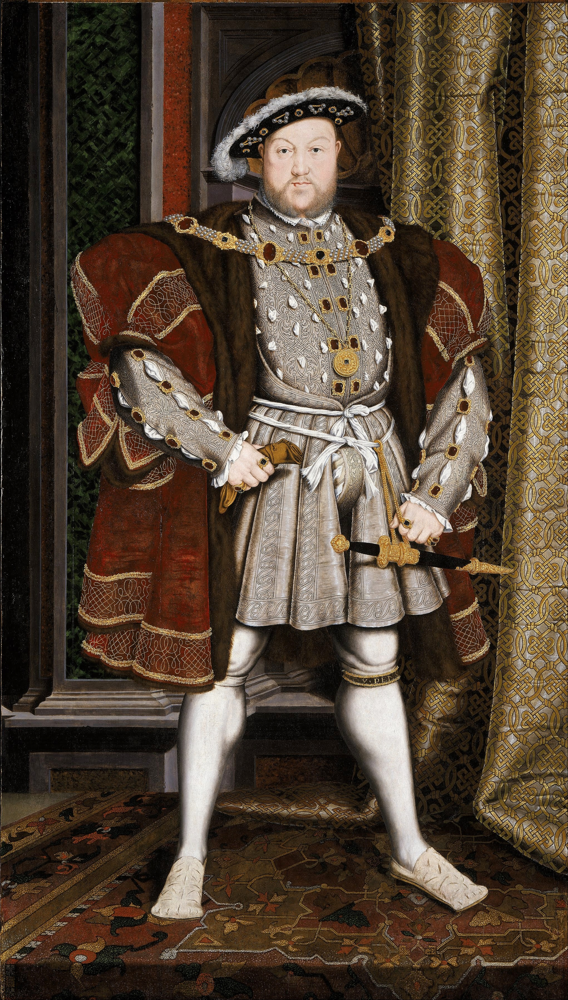

Henry VIII ruled England for 36 years, presiding over sweeping changes that brought his nation into the Protestant Reformation. He famously married a series of six wives in his search for political alliance, marital bliss and a healthy male heir. His desire to annul his first marriage without papal approval led to the creation of a separate Church of England. Of his marriages, two ended in annulment, two in natural deaths and two with his wives' beheadings for adultery and treason. His children Edward VI, Mary I and Elizabeth I would each take their turn as England's monarch.
Angela Westmoreland, M.Ed., is an instructional design, systems architect, and professional educator in Fayetteville, NC. A former history teacher, Angela has always been fascinated by the Tudors and continuously studies their history.